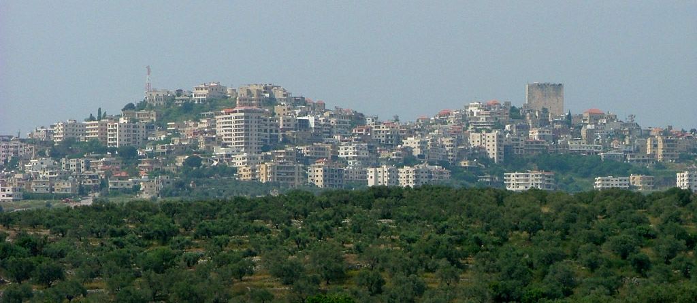
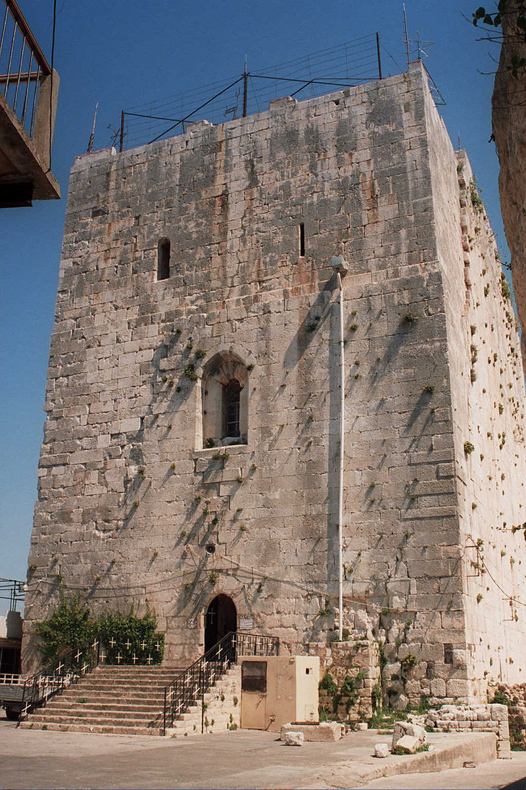
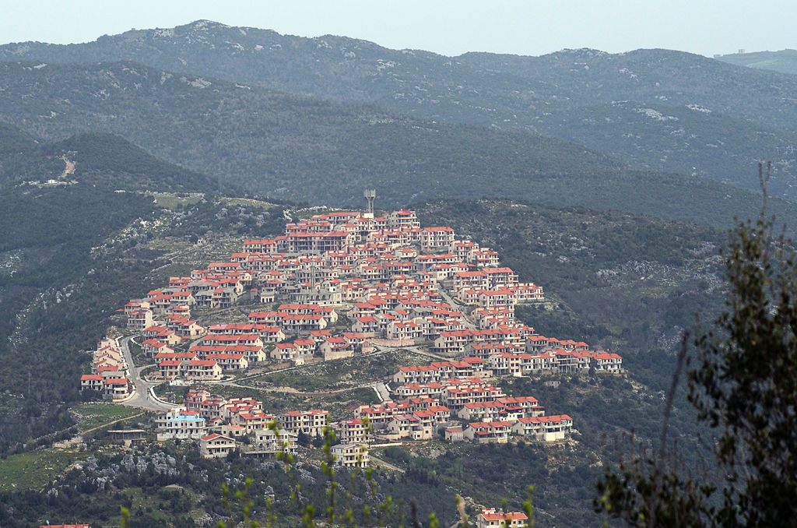
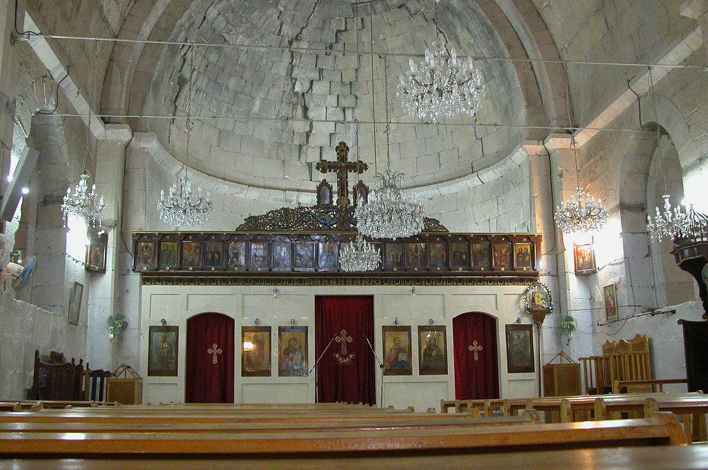

Safita
Safita (Arabic: صافيتا ) is a city in the Tartous Governorate, northwestern Syria, located to the southeast of Tartous and to the northwest of Krak des Chevaliers. It is situated on the tops of three hills and the valleys between them, in the Syrian Coastal Mountain Range. According to the Syria Central Bureau of Statistics (CBS) , Safita had a population of 20,301 in the 2004 census
Geography
Safita is situated at the southeastern end of the Syrian Coastal Mountain Range.[2] It is 26 kilometers (16 mi) southeast of the Mediterranean port city of Tartus d 55 kilometers (34 mi) northwest of Homs.[2] The average elevation of Safita is 400 meters (1,300 ft) above sea level, while the Crusader fortress stands about 720 meters (2,360 ft)
History
Safita is located on a site where remains of the Phoenician settlement were discovered. The archaeological remains at the site of Tell Kazel were identified as the Phoenician city of Sumur mentioned in the Amarna letters.
Crusader era
 Raymond IV, Count of Toulouse founded the County of Tripoli. The Knights Templar, to whom the lands of the region were given, built the fortress known today as the "Chastel Blanc" . The fortress sits on a strategic observation point, and from there it maintains eye contact with the network of fortresses of the Templar Order, Arwad and Tartus on the coast in the northwest, Chastel Rouge in the southwest and Krak des Chevaliers in the southeast. The Mamluk Sultan Baibars managed to capture Safita in 1271 to become under Muslim rule.
Ottoman era
Safita was the center of the principal nahiya (subdistrict) of the southern Syrian Coastal Mountain Range during the Ottoman rule through the 16th and early 17th centuries, spanning about forty villages and, at times, including the subdistricts of Mi'ar, Qulay'a and Tartus within its jurisdiction. The Sayfa dynasty, based in the hinterland of Tripoli, controlled the town until 1640, often using its fortress in their wars with the Druze Ma'an dynasty of Mount Lebanon. In 1621 Yusuf Sayfa dispatched a force against his nephew, and ally of the Ma'anid Fakhr ad-Din II, Sulayman, in Safita for not forwarding the subdistrict's tax revenue to Tripoli
After 1640, Safita is seldom mentioned in the historical chronicles of the middle Ottoman period. However, court records in Tripoli Sanjak, of which Safita was part, the earliest of which date to 1666 and 1667 indicate the iltizam (tax farms) of the Safita nahiya were sold to the Alawite brothers Muhammad and Zaydan, sons of Shamsin in 1667–1668. They were charged with collecting taxes on behalf of the government on fruit trees, agricultural lands, falcons, bees, silk, flour mills, buffalo, wave labor, festivals, weddings and wintering camps of Turkmen and Arab nomads. The Shamsin family emerged as the dominant local force of Safita until the late 17th century, but resumed the role in 1721.
Modern era
In 1943 its population of 3,500 largely consisted of Greek Orthodox Christians.[2] At the time, its houses were described as well-built and made of alternating black and white stones and clustered around the Crusader-era fortress.[2] In 1960 Safita had a population of 4,300 Christians and 1,900 Alawites
Landmarks
 The Crusader fortress "Chastel Blanc", a square tower built in 1202, is well preserved and rises to a height of 28 meters. It is 18 meters wide and 31 meters long. Among its walls, 3 meters high, is a chapel dedicated to St. Michael and serving the Greek Orthodox community of the city. The second floor of the building, which can be ascended in a stone staircase, was originally used as a dormitory and is illuminated by firing slits. Beneath the tower was a water cistern that was used by the inhabitants of the fortress.